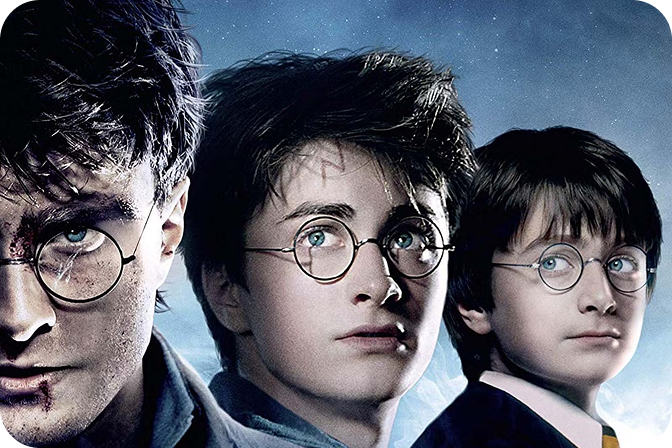

A Saga Harry Potter
A saga Harry Potter, escrita por J.K. Rowling, é composta por sete livros que acompanham a trajetória de um jovem bruxo, Harry, desde sua descoberta do mundo mágico até a batalha final contra o vilão Lord Voldemort. A história começa quando Harry, aos 11 anos, recebe uma carta de Hogwarts, uma escola de magia, revelando que ele é um bruxo e tem um passado ligado ao maior bruxo das trevas da história.
Certamente uma das coisas mais marcantes e excitantes nesse universo é...
Hogwarts
Sua Autora...
J.K Rowling
(ou, se preferir, Joanne Rowling)
“Antes mesmo de pensar em me tornar escritora, J.K. Rowling me fez leitora. Seus livros foram os primeiros a me fazer esquecer onde eu estava, quem eu era…”
- V.E. Schwab
“Além de nos ensinar que ‘a felicidade pode ser encontrada mesmo nos tempos mais escuros, se você lembrar de acender a luz’, Rowling me ensinou a importância de detalhes simples na construção de mundo…”
- Chelsea Mueller
J.K. Rowling nasceu em 1965, na Inglaterra, e sempre teve paixão por contar histórias. A ideia de Harry Potter surgiu durante uma viagem de trem em 1990, e ela a desenvolveu enquanto enfrentava dificuldades pessoais e financeiras. O primeiro livro foi rejeitado por várias editoras até ser publicado em 1997 pela Bloomsbury. O sucesso foi imediato, e a série se tornou um fenômeno global. Com isso, Rowling se transformou em uma das autoras mais ricas e influentes do mundo.